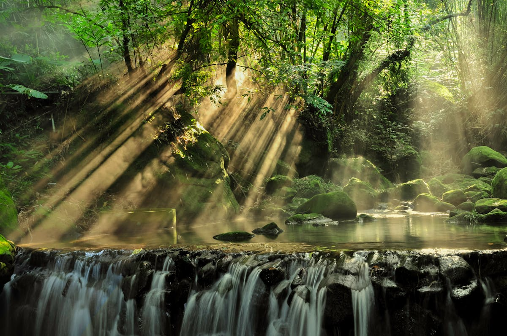

Top Attractions in Taniti
Explore the best that Taniti Island has to offer! From stunning beaches to lush rainforests and a breathtaking volcano, there's something for every traveler.

Yellow Leaf Bay
Relax on Taniti's pristine white sandy beaches that encircle Yellow Leaf Bay. Enjoy sunbathing, swimming, and breathtaking sunsets, all within walking distance of Taniti City.
Active Volcano
Take a guided tour to Taniti's small but active volcano. Experience the thrill of hiking to the summit and enjoy panoramic views of the island's diverse landscape.

Lush Rainforest
Discover the wonders of Taniti's tropical rainforest. Walk along scenic trails, spot exotic wildlife, and immerse yourself in the island's natural beauty.